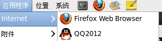
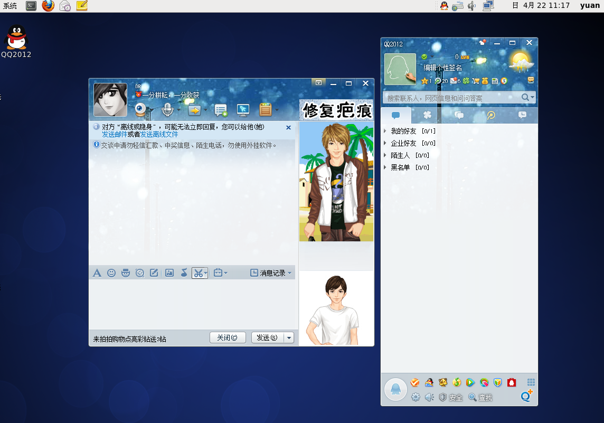
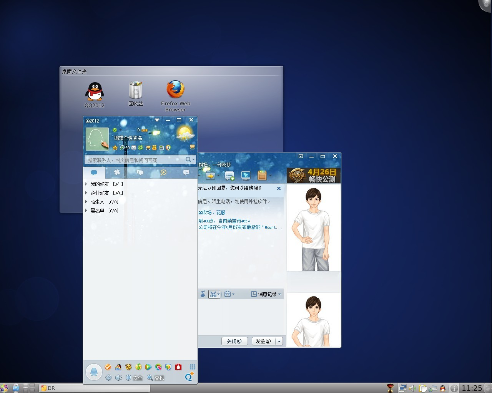
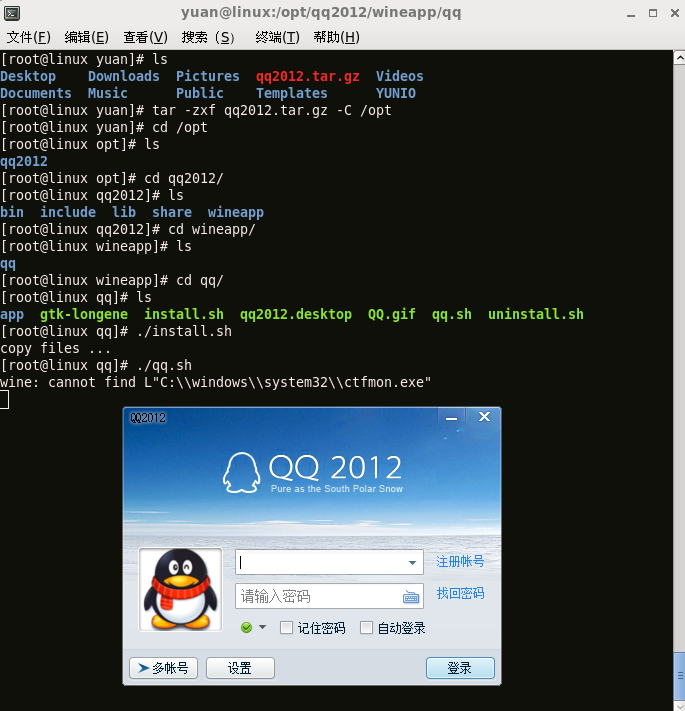
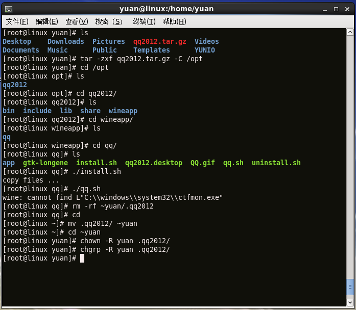
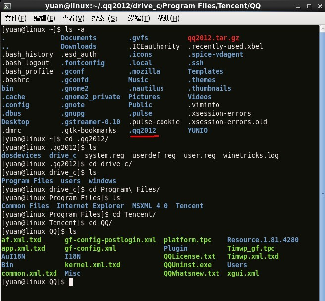

查看文章 |
【转】Linux下安装QQ2012
2012-04-25 22:16
首先说明，本人在CentOS6.2下亲测成功，其它版本的Linux未曾试过！ +-----------------------------------------------------------------------+ +-----------------------------------------------------------------------+ # tar -zxvf qq2012.tar.gz -C /opt # cd /opt # ls # cd qq2012/wineapp/qq/ # ls # ./install.sh copy files ... # ./qq.sh
安装已经完成，但此时在普通用户下无法打开QQ2012，下面是解决方法： # rm -rf ~yuan/.qq2012 # cd # mv .qq2012/ ~yuan # cd ~yuan # chown -R yuan .qq2012/ # chgrp -R yuan .qq2012/ 这里的yuan是我的用户名，由于文件是从root移动过来的，所以不要忘了改权限. OK!完成，可以从应用程序－Internet-QQ2012打开，或者右键QQ2012添加到桌面，直接 从桌面打开。 
附截图： 这是gnome下的：  这是KDE下的： 
附安装过程：  续：  如果是在ubuntu下安装，可参考：http://www.longene.org/forum/viewtopic.php?f=6&t=4700
下面再说说如何更新QQ，  这些文件夹是不是很熟悉？可以看到下面有个QQ的文件夹，只要在Windows下面复制个QQ的文件夹过来替换掉就行了。
|